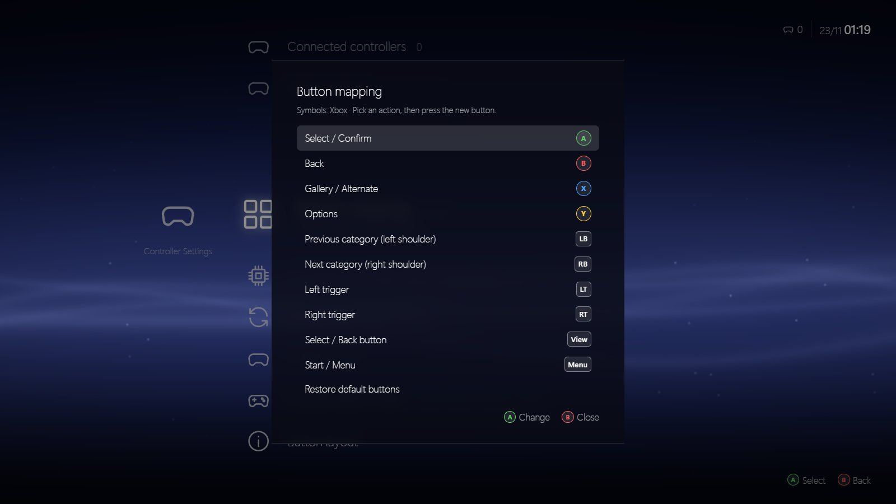

Docs / Using POLYMIRA
Controllers
Supported controllers, button symbols and remapping.
Supported controllers
Xbox controllers, DualShock 4, DualSense, Switch Pro and most controllers that Windows recognises as gamepads. The keyboard and mouse wheel also work.
Default buttons
| Xbox | PlayStation | Keyboard | Action |
|---|---|---|---|
| D-pad / left stick | D-pad / left stick | Arrows | Move |
| A | ✕ | Enter | Select |
| B | ○ | Esc | Back |
| Y | △ | T | Options |
| X | □ | G | Gallery |
| LB / RB | L1 / R1 | Q / E | Previous / next category |
| Guide, or Back + Start | PS, or Share + Options | Ctrl+Shift+Home | In-game menu |
Button symbols
The hints at the bottom of the screen follow the controller you last used: A B X Y for Xbox, ✕ ○ □ △ for PlayStation, the Nintendo layout for Switch pads, key names for the keyboard. To always show one style, use Settings → Controller Settings → Button symbols.
Remapping

Open Settings → Controller Settings → Button mapping, select an action and press the button you want for it. If that button was used by another action, the two are swapped. Restore default buttons resets everything. The D-pad always stays as navigation.